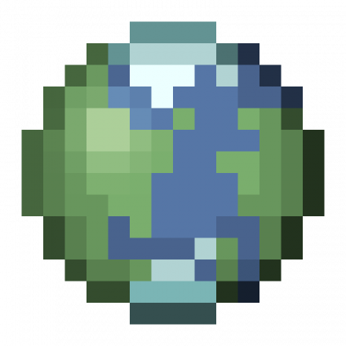
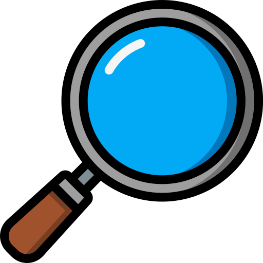

Escolha uma categoria e descubra tudo sobre o universo de Minecraft.
Descubra mods que adicionam novas aventuras, itens, dimensões e mecânicas ao jogo.

Conheça todos os biomas, seus recursos e os mobs que aparecem em cada um.

Descubra curiosidades, segredos e fatos interessantes sobre o jogo.